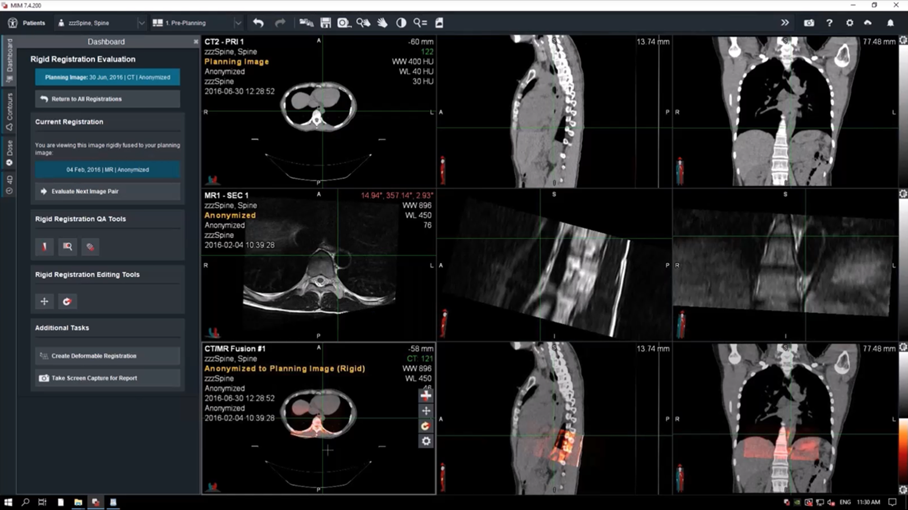
Figma Prototyping
⬤
Cross Function Collaboration
⬤
Product Partnerships
Radiation Oncology is a type of treatment for cancers. MIM is a diagnostic product that specializes in image fusions and contouring for radiation oncology clinics. For simplicity, radiation oncology has 4 major steps, outlined below. MIM's diagostic tools primarily have come into play for Step 2 for contouring and Step 4 for treatment evaluation. This creates a gap during Step 3, the treatment planning process.
Typically, clinicians transfer data into a Treatment Planning System (TPS) after they are done contouring in MIM. However, without integrations, this process can become cumbersome and increase treatment times for patients. MIM competitors either are both a diagnostic tool and a TPS or they have better integrations with an existing TPS. This gap has hurt MIM and led to lack of adoption.
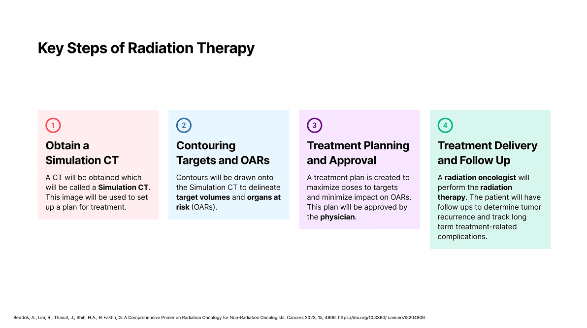
Throughout the radiation oncology process, there are 5 major user groups who are involved. From a business perspective, MIM has been targeting physicians due to their strong influence at radiation oncology clinics. Physician adoption is believed to increase MIM's Radiation Oncology market share and drive revenue. The initiation of the Elekta ONE partnership was aiming to increase MIM's adoption amongst physicians, particularly in international channels across Europe.
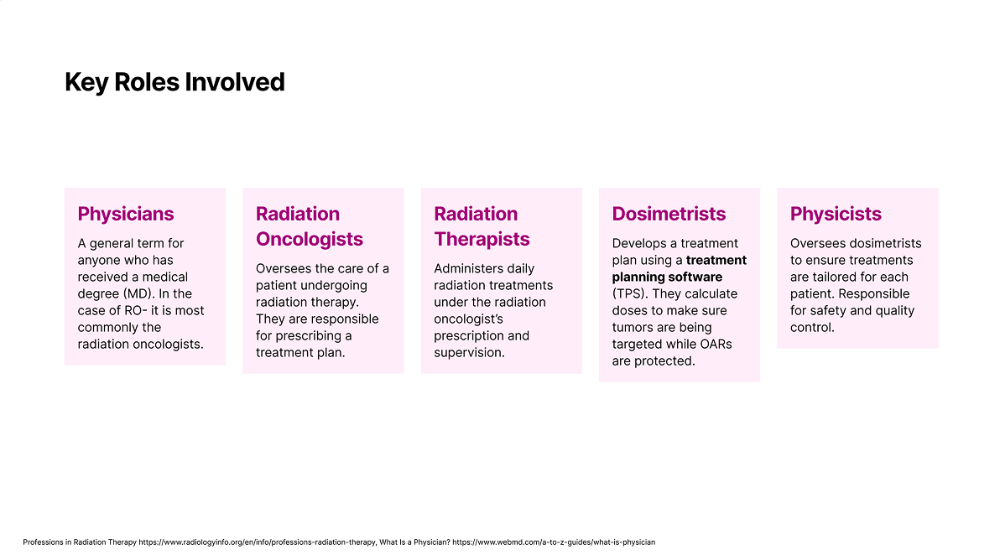
The initial target use case for the Elekta ONE partnership was Online Adaptive Radiotherapy- a process in which a user is actively on the table and is having their treatment adapted to their current condition. This process is known for being extremely time sensitive, and MIM saw an opportunity to use it's features alongside Elekta's Treatment Planning System, Monaco, to save clinicians time and get the patient treated faster and more accurately. This also initiated conversations for an additional product line general to all treatment planning. This product partnership changed the vision for MIM. It would no longer be just a diagnostic software, but now could be used throughout the entire patient journey. Below is the general flow that MIM's Elekta ONE Planning workflow would follow.
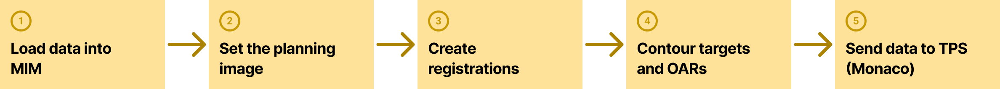
The framework this product would be built upon is called MIM Workflows. This framework was internally built for MIM, but it came with a lot of limitations since the original intent of MIM Workflows was to be used for a linear set of actions. For this product, we wanted to create dashboards and sidebars that allows clinicians to jump into any part of the patient journey at any time, this way hand off between different roles would be easier. It also allowed clinicians to perform only the actions they needed without slowing them down to fill out unnecessary information.
I don’t mean to be a complainer, but when I was shown the initial draft for this project I was horrified! Below is an image of what that first draft looked like. It was fully built out inside of MIM- this was the live framework that we were to be using. I learned that MIM Workflow UI often had pretty extreme limitations. You could include text, buttons, and some other basic components within them. However, the styles of these components weren't great (take your guess at which text is a button in the image below!) Additionally, the UI was not dynamic. If you needed to perform an action and have something on the table change (such as performing a calculation), it would require the entire table to be rebuilt for the new information to appear. This not only was a pain for our engineers, but it would force a loading screen to pop up for the user at the click of every button!
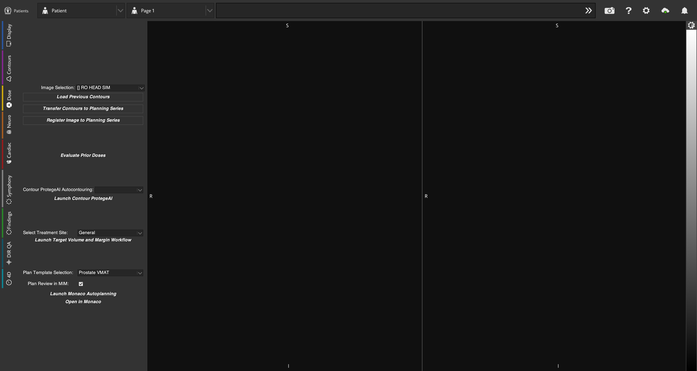
When we initially begun the design phase for this product, I did the best I could to build out dashboards that could be functional and easy to navigate. However, the list of limitations that engineers would push back on kept piling up. At one point, I was told that a "select all" checkbox was "impossible" to implement. It felt like no matter what I designed with this framework, it would lack core interactive functionality needed to be intuitive for users. I knew there needed to be a lot of work done to get this product in a place that would truly save clinicians time and effort.
After seeing the first draft ideas and learning more about the limitations of MIM Workflows, I knew something needed to change. I worked diligently to gather thoughts from the current MIM Workflow Engineers and MIM Clinical Scientists to figure out where improvements could be made and what we could achieve quickly given the timeline for the Elekta ONE partnerships.
I sent out an internal survey, synthesized the feedback into a slide deck, and presented this information to our CTO, Senior Direct of Product, and Senior Engineering Director. After having a conversation with them, it was agreed that a change was needed and thus the MIM Workflow Improvement effort was born! For the next several years I would be working closely with MIM engineers to redesign and improve the workflow framework.
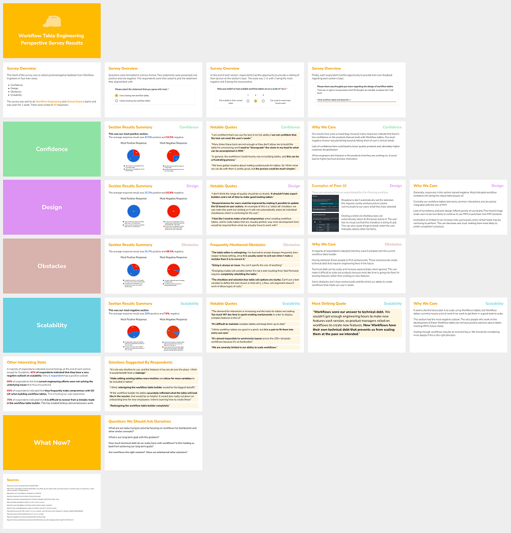
We used the Elekta ONE partnership as a way to spearhead the updates being made to the MIM Workflow framework. Since this was a big project, and we were under pretty major time constraints, it was important that we figured out a solution to make Workflows viable quickly. As I gathered the clinical requirements for the Elekta ONE project and began drafting user flows and screens for the design, I also began laying out what was needed in the new framework. I had to consider what was achievable today and how much effort it would take for the engineering teams to replicate better styles. Because our engineers had so many limitations while working within this framework, I had to be mindful of what was possible and how big of an ask every style was. For example, adding borders proved to be challenging and would require a lot of manual work to set up. However, defining sections with a simple background color was much easier for our engineers.
There were a lot of compromises that had to be made during this process, and many tasks for improvements got put on a backlog because we knew it either was impossible to achieve in the timeframe, or it would be too costly to be worth it. The backlogged tasks would slowly get priortized over the next several versions of MIM, rather than implemented for this initial effort.
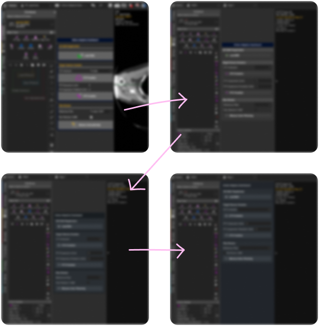
Once we had the minimum updates settled for the MIM Workflow Improvements, it was time to design the base of what would become the Elekta ONE MIM Workflow Dashboards! During this process I had the opportunity to collaborate with Elekta designers to learn about their design systems and brand guidelines. I worked with MIM's engineers to create a reskin of MIM for the partnership and then applied the new styles and colors to our Workflow sidebars. This set the foundation for our product, and I converted these styles into a mini design system. Below is an example of what these styles looked like.
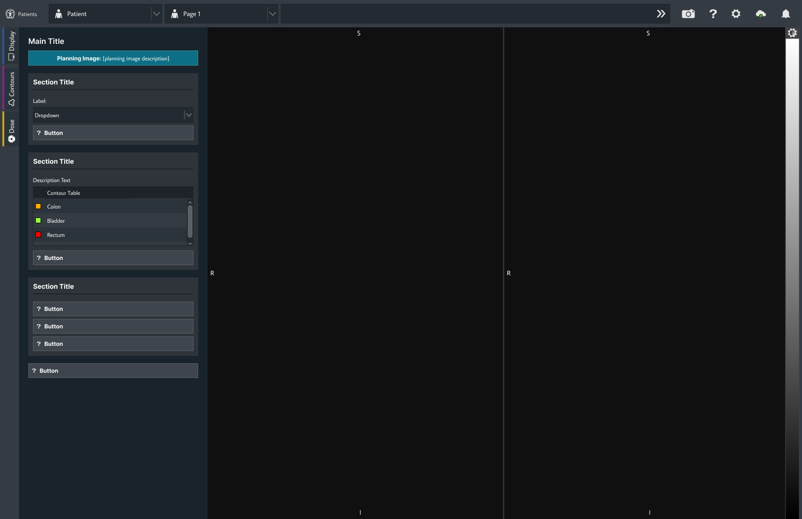
Once our Workflow Sidebar framework and reskin of MIM was in a good standing, I had begun meeting with our clinical scientists daily to determine the requirements for the product. This process involved drawing out the user flows and creating mockups for what clinicians would perform inside of MIM. Additionally, there were weekly meetings with the team at Elekta to discuss our plans and collaborate on what features we would include.
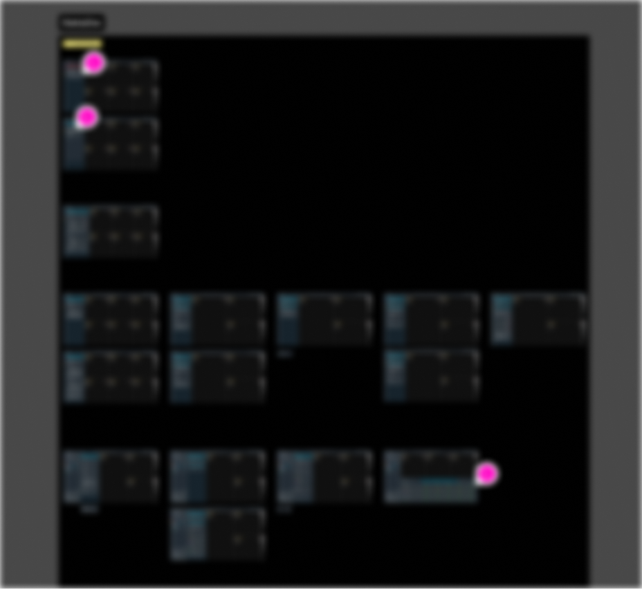
After we had the first prototype created, Elekta took the reign on usability testing. While I was not directly involved, I did get the opportunity to hear the official reporting of results and view their testing documents. I then made improvements to the designs based on the findings. We focused on redordering certain interactions to remove redundancies and lessen the amount of clicks needed. I also worked with the MIM Technical Communication team to use different strings to better match what Elekta's users are familiar with, that way certain actions and features were more recognizable.
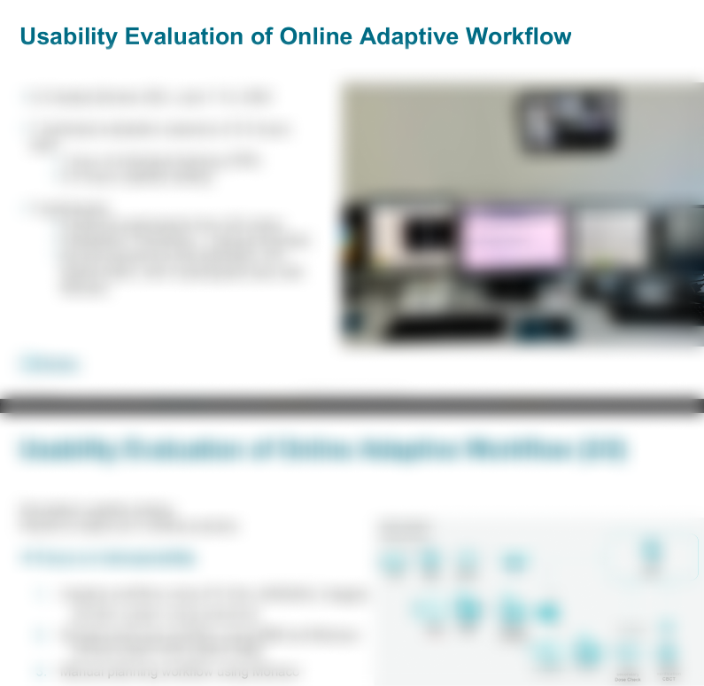
This product is live and available as a beta in some markets. You can see a webinar video of the product here . Please note that I have only worked on the design for MIM UI, Monaco's UI was created by Elekta's team.
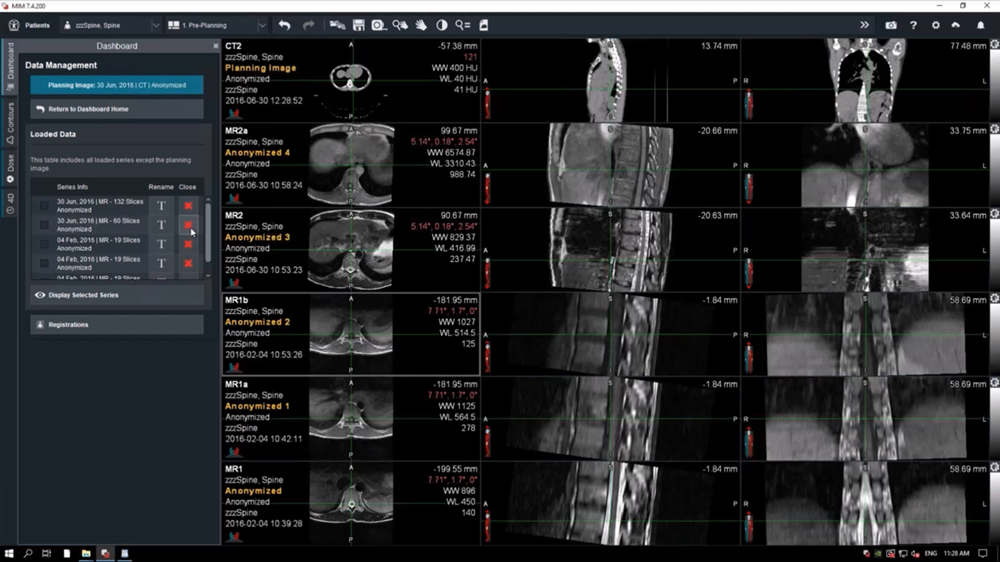